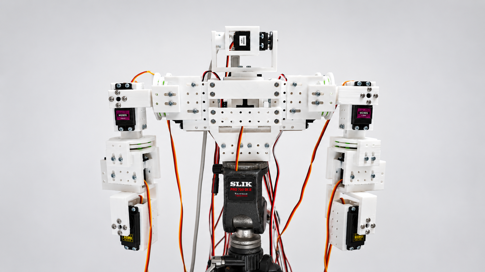
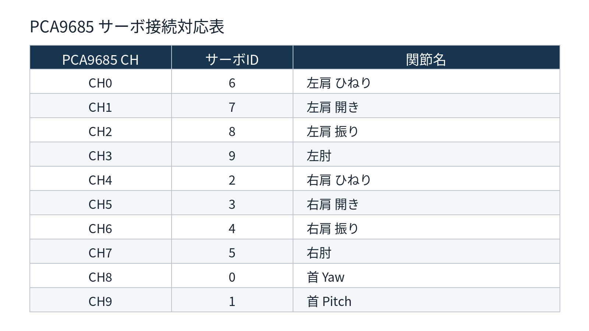
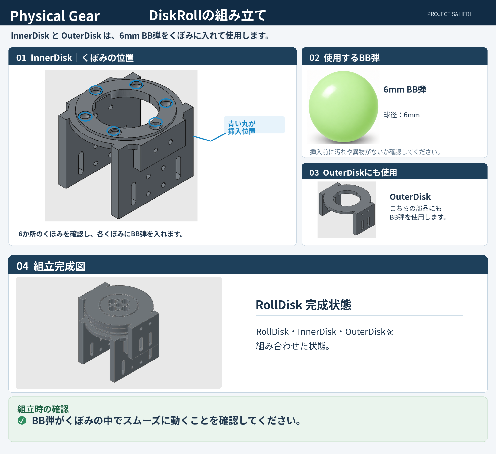
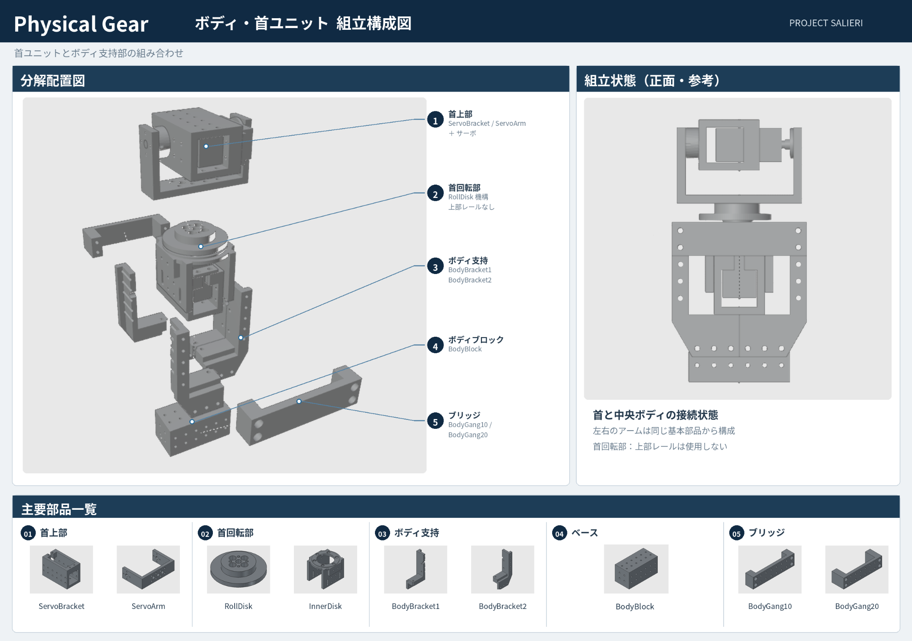

PROJECT SALIERI
Physical Gear Public
ロボットを作ることから、技術を学ぶ。
v0.1.0-beta（公開中）3Dプリンターと一般的なRCサーボで製作する、首2軸・左右腕各4軸の10軸上半身ロボットです。

好奇心こそ、学びの原点。
ロボットを作ってみたい。自分で動かしてみたい。
Physical Gearは、そんな好奇心から始められるロボット製作プロジェクトです。
3Dプリンター、一般的なRCサーボ、Arduino、そしてUnity。身近な技術を組み合わせることで、個人や学校でも人型ロボットの基本構造と制御を体験できるようにすることを目指しています。
作る → 動かす → 疑問を持つ → 調べる → 改造する
なぜサーボは回るのか。どうすれば腕を狙った場所へ動かせるのか。なぜ思いどおりに動かないのか。
一つの疑問から、電子回路、プログラミング、力学、材料、そしてAIへと興味が広がっていきます。
Physical Gearは完成品を提供するものではありません。自分の手で組み立て、動かし、仕組みを理解し、修理や改造を重ねていくための土台です。
最初から完璧なロボットを目指す必要はありません。
まず作って、動かしてみる。
そこから新しい発見が始まります。
PROJECT SALIERI — Physical Gear
System Requirements
動作環境・必要ソフトウェア
| 区分 | 要件・対応状況 |
|---|---|
| Windows EXE版 |
|
| Unityアセット版 |
|
| 実機制御環境 |
|
| 対応状況 |
|
CPU、RAM、GPU、および具体的なWindows対応バージョンは、検証済み資料を確認後に掲載します。根拠のない最低スペックは設定していません。
01
用意するもの
必要な電子部品、サーボ、ネジ、6mm BB弾、電源、USBケーブル、三脚を確認します。
.png)
02
Arduinoとサーボの対応表
PCA9685のCH0〜CH9とServo ID 0〜9の接続対応を確認します。この図はチャンネル対応表であり、ArduinoとPCA9685本体の配線図ではありません。

05
ディスクロールへのBB弾挿入
InnerDiskとOuterDiskのくぼみに6mm BB弾を入れ、組立後にBB弾が内部で滑らかに動くことを確認します。

06
ボディの組み立て
首、ボディ支持部、BodyBlock、接続パーツを組み合わせます。首の回転ユニットには上部レールを使用しません。

配布について
GitHubでは紹介、組立資料、将来の公開ソースを掲載します。STL、Unityアセット、Arduinoスケッチを含む配布データはBOOTHから提供します。
無料版と、固定ポーズハンドSTLを追加収録した支援版があります。Windows EXEは今回の配布に含まれません。GitHub Releasesには配布ZIPを置きません。